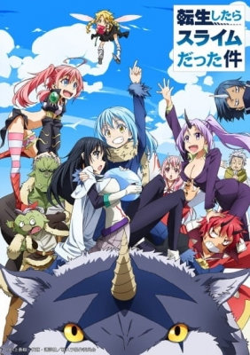
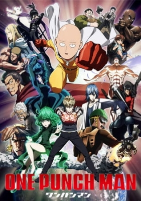

However, certain series and films have left a significant mark on the anime community and are frequently cited as must-watch titles. Here’s a curated list of some of the best anime across various genres:
- One Piece

One Piece follows Monkey D. Luffy, a young pirate with the ability to stretch his body like rubber after eating a Devil Fruit. Luffy sets out on an epic adventure to find the legendary treasure known as "One Piece" and become the Pirate King. Along the way, he gathers a diverse crew, each with unique skills and dreams. The series is renowned for its rich world-building, memorable characters, and themes of friendship, freedom, and perseverance, making it one of the most beloved and long-running anime and manga franchises.
- Naruto: Shippuden

Naruto: Shippuden continues the story of Naruto Uzumaki, a young ninja with dreams of becoming Hokage. Set two and a half years after the original series, it follows Naruto as he trains to master his powers and confronts formidable enemies, including the Akatsuki organization. The series delves into themes of friendship, redemption, and perseverance, while exploring the backstories of various characters. With intense battles, emotional growth, and a rich narrative, Shippuden captivates fans as it leads to Naruto’s ultimate quest for acceptance and recognition in his world.
- Bleach

Bleach follows Ichigo Kurosaki, a high school student with the ability to see ghosts. After encountering Rukia Kuchiki, a Soul Reaper, he gains her powers to protect the living from malevolent spirits called Hollows. The series explores Ichigo's battles against various foes, his growth as a fighter, and the complex world of Soul Reapers. With its mix of action, supernatural elements, and strong character development, Bleach has become a beloved staple in the shonen genre, featuring memorable battles and a rich lore.
- Black Clover

Black Clover follows Asta, a determined boy born without magic in a world where it’s everything. Despite this, he dreams of becoming the Wizard King. Alongside his rival and childhood friend Yuno, who possesses immense magical talent, Asta joins the Black Bulls, a group of misfit Magic Knights. The series showcases thrilling battles, friendship, and the power of perseverance as Asta strives to prove his worth and overcome challenges. With its vibrant characters and engaging story, Black Clover has gained a dedicated fanbase in the shonen genre.
- Attack on Titan

Attack on Titan is set in a world where humanity is on the brink of extinction due to giant humanoid creatures called Titans. The story follows Eren Yeager, his adoptive sister Mikasa, and friend Armin as they join the military to fight back after Titans destroy their home. As they uncover dark secrets about the Titans and their own world, the series explores themes of freedom, survival, and the consequences of war. With intense action, deep character development, and a gripping plot, Attack on Titan has become a landmark in anime and manga, captivating audiences worldwide.
- My Hero Academia

My Hero Academia follows Izuku Midoriya, a boy born without superpowers in a world where almost everyone has them. Dreaming of becoming a hero, he is inspired by the legendary All Might, who grants him his powers. The series follows Midoriya and his classmates at U.A. High School as they train to become professional heroes. With themes of friendship, perseverance, and heroism, it features intense battles, unique abilities, and a diverse cast of characters, making it a beloved addition to the shonen genre and a modern classic in anime and manga.>
- Dragon Ball

Dragon Ball follows the adventures of Son Goku, a young warrior with extraordinary strength and a pure heart. Initially searching for the mystical Dragon Balls, which grant wishes when collected, Goku embarks on epic quests, battles powerful foes, and trains with legendary masters. The series blends action, humor, and martial arts, introducing iconic characters like Bulma, Piccolo, and Vegeta. With its influence on the shonen genre and unforgettable fight scenes, Dragon Ball has become a cultural phenomenon, inspiring countless adaptations and a dedicated fanbase worldwide.
- Death Note

Death Note follows Light Yagami, a brilliant high school student who discovers a mysterious notebook that allows him to kill anyone by writing their name in it. Adopting the persona of "Kira," Light aims to create a utopia free of crime. However, his actions attract the attention of a genius detective known as L, leading to a high-stakes cat-and-mouse game. The series delves into themes of morality, justice, and the consequences of power, combining psychological intrigue with intense suspense. With its gripping narrative and complex characters, Death Note remains a standout in the psychological thriller genre.
- Mashle: Magic and Muscles

Mashle: Magic and Muscles follows Mash Burnedead, a young man born without magical abilities in a world where magic is everything. Despite this, he trains his incredible physical strength to become the strongest and prove that muscles can triumph over magic. When he gets involved in a prestigious magic school, Mash faces various challenges and battles against powerful opponents. The series blends action, comedy, and fantasy, highlighting themes of friendship and perseverance. With its unique premise and humorous take on traditional fantasy tropes, Mashle has garnered a growing fanbase in the shonen genre.
- Classroom of the Elite

Classroom of the Elite follows Kiyotaka Ayanokoji, a student at the prestigious Tokyo Metropolitan Advanced Nurturing School, where students are divided into classes based on merit. The story centers on Class D, often looked down upon, as they navigate a cutthroat environment filled with manipulation, competition, and social dynamics. Ayanokoji, who hides his exceptional abilities, becomes embroiled in the struggles and strategies of his classmates as they strive for success and recognition. The series explores themes of intelligence, ambition, and the complexities of human relationships, offering a thrilling blend of psychological drama and social intrigue.
- That Time I Got Reincarnated as a Slime

That Time I Got Reincarnated as a Slime follows Satoru Mikami, an average office worker who is reincarnated in a fantasy world as a powerful slime monster after being killed. With unique abilities, including the power to absorb and mimic other creatures, he sets out to create a peaceful society. Naming himself Rimuru Tempest, he gathers allies, builds a community, and navigates challenges from both monsters and humans. The series blends humor, adventure, and world-building, exploring themes of friendship, leadership, and coexistence. Its engaging characters and lighthearted tone have made it a popular choice in the isekai genre./p>
- One Punch Man

One Punch Man follows Saitama, an ordinary man who becomes a superhero for fun. Despite his overwhelming strength, which allows him to defeat any opponent with a single punch, he struggles with boredom and a lack of recognition. The series humorously explores themes of heroism, existentialism, and the nature of power while featuring a colorful cast of heroes and villains. With its unique blend of action and comedy, stunning animation, and satirical take on the superhero genre, One Punch Man has become a standout in the anime and manga community.